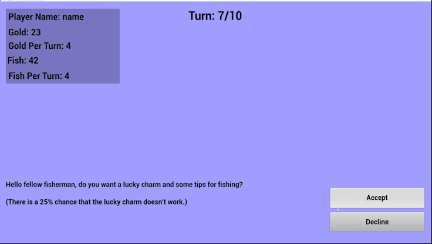

"Turn and Fortune" is a thrilling card game that puts you in the
shoes of a fisherman who wants to be the best in the business. As
you dive into the world of card games, you soon realize that you
have 10 turns to make your mark and amass the most gold and fish.
The game is simple - choose three of the nine cards available, and
then pick one option from each card to gain or lose gold and fish.
But beware! Every turn ends with a special trade offer that could
make or break your fortune. The game is built using Unreal Engine,
with a focus on using simple shapes and vibrant colors to make the
gameplay more engaging. Dive into this world and see if you have
what it takes to be the ultimate fisherman and card game master.
Video and Screenshots

Video Timestamps
- Portion of introduction dialogue/scene.
- Start of tutorial/gameplay. Top left shows the player's
information like their name, the amount of gold they currently
have, the amount of gold they currently get for each turn, the
amount of fish they currently have, and the amount of fish they
currently get for each turn. In the top/center of the screen, it
shows what turn number you are on and how many card flips you have
left for the current turn. On the top right, there is a button
that allows you to open you inventory.
- Shows the values of the card that you have chosen and allows you
to chose one of the two options listed on the card.
- Shows the special event and allows you to accept or decline the
shown event. For some of the events, your decision can also affect
the game in the future, so be careful!
- Shows the turn summary of the turn that you just finished. This
summary includes the turn number, how much gold, gold per turn,
fish, and fish per turn that you gained or lost during that turn,
and what items you recieved.
- Shows your current inventory. By hovering over each item, you
can see the name of the item, and in the bottom left corner of
each item, you can see how much you have of that item.
- Shows the game over screen, the stats that you finished the game
with, and a button that allows you to play the game again.
Why I Did This Project
I made "Turn and Fortune" for a client on fiverr.
What I Learned From This Project
How to utilize the game instance in Unreal Engine to store variables
that can be used across different widgets
How to add music playing in the background (without stopping between
changing widgets)
How to make a fully working inventory system (where you can
"collect" and "use" the items)
How to use structures in Unreal Engine to be able to store the card
values and special event information easier